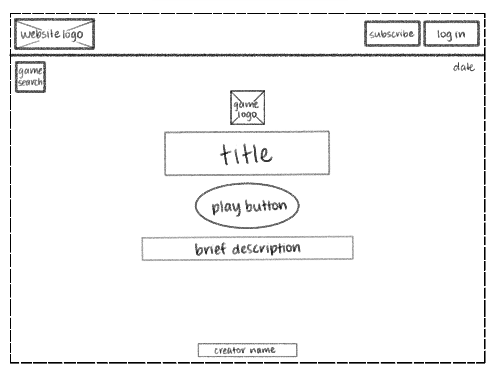

-
Using the favorite website you chose in homework 1, create a wireframe for one page of it using pen/paper, PowerPoint, or any your tool of choice. (use the 'img' tag!) Make sure to let us know what the name of your website is (Use the 'p' tag!)
-
Try to improve the website you've chosen, and create a redesigned wireframe of one page for the same website using the principles of visual hierarchy that you learned from the article.

-
What is the goal of the website? Who is it intended for? How does the design accomplish this? Write 2-3 sentences answering these questions. (Use the 'p' tag again!)
The website is intended for anyone, kids or adults. The goal of the website is for users to easily play a daily wordle puzzle game. The design is simplistic, not overwhelming, and has the title, brief description of the game, and the play button in the center of the webpage. This makes it easy for the user to understand the rules of the game and go straight to the game with the click of a button.
-
Write 2-3 sentences about what problems your redesign addressed, and how it solved them.
I felt that even though the title, description, and play button were centered on the webpage, the log in and subscribe buttons were distracting from the focus of the website. Especially since those buttons were already on the top right hand corner of the page, I decided to remove them from the center bottom. I also thought the game search next to the logo needed to be below the logo instead so the users could easily discover other games they could play. I moved the date to the right hand corner, so users could recognize the daily aspect of the connections game, rather than barely see the date when it was at the bottom of the page.
NOTE: Make sure to include the wireframe images in the website and don't just put it in your assets folder!
Your wireframes should look something like this: